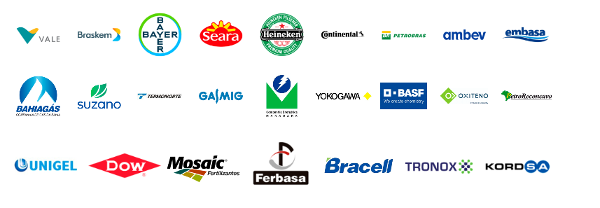

Serviços e soluções voltados para instrumentação analítica. Automação e controle de processos industriais com eficiência e segurança.
■ Experiência no dimensionamento e escolha de válvulas para controle de vapor.
■ Válvulas de controle e ON/OFF para os setores de bebidas, alimentos, química, petroquímica, papel e celulose, mineração e outros.
■ Soluções inteligentes em automação de produção, logística e processos — do sensor ao CLP — para apoiar a digitalização da indústria.
■ Conectividade com dispositivos preparados para a Indústria 4.0, incluindo plataformas de IoT, módulos de interface e diversas opções de conexões.
■ Linha completa de instrumentos para calibração, testes e medições, com segurança, precisão e robustez.
■ Ampla experiência em automação eletropneumática.
■ Soluções completas em sistemas cromatográficos para análise físico-química do gás natural e de compostos sulfurosos, em conformidade com a ANP.
■ Fabricação própria de sistemas de condicionamento de amostras (SWAS, CEMS, GLP, GLN).
■ Fornecimento de casas de analisadores conforme a norma IEC 61285, além de shelters, abrigos de três paredes e abrigos autônomos para sistemas de medição e análise de gases e líquidos.
■ Desenvolvimento de soluções personalizadas para atender às necessidades específicas de cada cliente, garantindo eficiência e confiabilidade nos processos de análise.
■ Produtos e serviços para análise cromatográfica de gás natural e odorantes, com soluções personalizadas que vão do ponto de amostragem ao analisador, incluindo projeto, manutenção e suporte pós-venda local.
Nossos Segmentos
Somos pioneiros no fornecimento de Soluções em Automação e Controle de Processos Industriais, Sistemas de Detecção de Vazamentos de Gás, Tratamento de Ar e Segurança de Máquinas e Equipamentos. A Delmar Controls do Brasil conta com parceiros líderes em seus segmentos de atuação, trazendo tecnologia de ponta para atender as necessidades dos seus clientes, sempre com pontualidade na entrega e segurança no pós-venda.
Especialistas em Instrumentação Analítica com fabricação própria casa de analisadores, amostradores, sistemas de resfriamentos, entre outros. Fornecemos ampla linha de produtos para diversas variáveis analíticas. Produzimos sistemas completos e customizados para análise de Gás Natural por Cromatografia e medição de odorantes . Atendemos aos padrões Internacionais e portarias ANP com equipamentos certificados pelo INMETRO.
Nossos Produtos

Válvulas de Controle de Processo e Válvulas On-Off
Controle Preciso, aplicações severas, tecnologia inovadora, diversas aplicações

Válvulas Revestidas
Válvulas completamente revestidas para serviços com fluidos corrosivos e abrasivos.

Filtros Separadores de Membrana e Sondas de Amostragem
Projetados para amostras gasosas e líquidas, aplicados em sistemas analíticos e análise cromatográfica.

Detecção de Gás e Chama
Detectores fixos para monitoramento de ambientes e detectores portáteis para proteção pessoal.

Instrumentos de Teste e Medição
Equipamentos para medição de grandezas elétricas, calibração de instrumentos, analisadores de qualidade de energia.

Sensores e Sistemas de Segurança
Soluções para proteção de máquinas e pessoas, com detecção confiável e precisa. Produtos robustos, diversos e aplicáveis.

Acessórios para Calibração de Instrumentos de Pressão
Conectores, adaptadores, mangueiras, bombas manuais pneumáticas e hidráulicas, além de maletas para calibração.

Soluções de Instrumentos de Pressão e Temperatura
Confiança nas medições, segurança e confiabilidade de processos.

Automação Eletropneumática
Produtos de alto desempenho para controle de fluidos, sistemas de segurança para prensas e válvulas SIL 3.

Automação e Controle de Processos Industriais
Automação com padrões abertos, simplificação do processo.

Cromatografia para sulfurosos (Odorantes)
Some representative placeholder content for the first slide.

Analisadores de umidade em gases e líquidos
Some representative placeholder content for the second slide.

Cromatografia e Computador de Vazão para Gás Natural
Some representative placeholder content for the third slide.

Filtros Separadores de Membrana e Sondas de Amostragem
Some representative placeholder content for the third slide.
Sobre o Grupo
Quem Somos
O Grupo Delmar trabalha com dedicação e qualidade para oferecer soluções completas em controle e análise de processos. Com experiência em Instrumentação Industrial, Automação e Analítica, seguimos expandindo nossa atuação e trazendo para perto parceiros reconhecidos mundialmente. Assim, garantimos tecnologia de ponta, segurança e confiança em cada entrega. Para nós, o maior valor está nas pessoas. É por isso que nossa jornada de sucesso é movida pela satisfação dos clientes e pelo desenvolvimento contínuo da nossa equipe.
Missão
O Grupo Delmar tem como missão atuar no mercado nacional, importando, fabricando e distribuindo com qualidade para o Brasil, equipamentos industriais do ramo de instrumentação de processo e analítica que atendam às expectativas dos nossos clientes e contribuam para o desenvolvimento sustentável do país.
Visão
O Grupo Delmar preconiza que a satisfação dos clientes é o princípio básico para o sucesso dos negócios e para o crescimento da empresa. A satisfação do cliente estará assegurada com o fornecimento de produtos e serviços em conformidade com padrões de qualidade mundiais e necessidades específicas deste, conferindo confiança nas relações comerciais e garantindo padrões competitivos de qualidade.
Valores
Aperfeiçoamento das relações com consumidores e fornecedores, atrelados a qualidade e melhoria contínua dos produtos e serviços para garantir a satisfação dos nossos clientes, valorização e comprometimento com os nossos colaboradores, compromisso com a verdade e comportamento ético são os principais valores do Grupo Delmar.
Clientes
